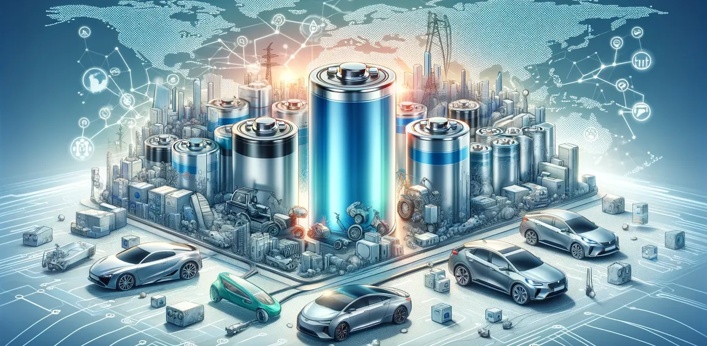

The power battery industry has undergone remarkable growth since the commercialization of lithium-ion batteries. This evolution, driven by advances in battery materials, modules, and systems, is not just a story of technological progress but also one of strategic business moves and competitive positioning.
By examining the industry's patent landscape, we can gain a clearer picture of its life cycle stages and future directions, offering valuable insights for businesses navigating this dynamic field.
Stages of Industry Development and Business Implications
1. The Germination Stage (1980-1990)
In the early days, the power battery industry was in its nascent stage, with limited patent activity. This period was marked by foundational scientific breakthroughs, such as Whittingham's concept of lithium metal rechargeable batteries and Goodenough’s development of cobalt acid and lithium manganate cathode materials. For businesses, this era was about laying the groundwork for future commercial opportunities.
2. Rapid Development Stage (1991-2006)
The introduction of graphite anode materials by Japanese scientists heralded the first commercial lithium-ion batteries, sparking a surge in patent activity with a compound annual growth rate of 33%. This period saw the proliferation of portable electronic devices, driving massive demand for lithium-ion batteries. Companies that recognized this trend and invested in R&D capitalized on the burgeoning market. The rapid technological advancements provided early movers with a significant competitive edge, positioning them as leaders in the field.
3. The Acceleration Stage (2007-Present)
This stage represents a phase of rapid growth and commercialization, significantly influenced by government policies promoting electric vehicles (EVs). Businesses that aligned with these policies and invested in battery technology saw substantial growth. The surge in EV adoption, driven by clear roadmaps and subsidies, opened new markets and revenue streams.
However, the industry also began to face bottlenecks in material technology around 2019, prompting a shift in focus towards optimizing battery application technology, modules, and systems. Companies that adapted their strategies to address these new challenges maintained their market positions and continued to thrive.
Global Competitive Landscape
From a global perspective, Japan and South Korea have been dominant players in the patent landscape for batteries, modules, and systems. These countries' companies, like South Korea's LG Electronics , hold significant patent portfolios, underscoring their leadership in battery innovation. For businesses, this highlights the importance of strategic patenting and R&D investment to maintain a competitive edge.

In China, while the number of patents is high, a substantial portion is still controlled by overseas firms. This indicates that Chinese companies face the challenge of increasing their share of high-value patents, particularly in material technology. Despite this, companies like CATL , BYD , and Guoxuan are emerging as global competitors, leveraging strategic investments and innovations to challenge established players.
Key Business Insights and Future Directions
Mature Battery Technology: The patent analysis indicates that battery technology is reaching maturity. For businesses, this means that future growth will likely come from innovations in battery modules and systems rather than from core battery technology itself. Companies should focus on these areas to capture new market opportunities.
Competitive Positioning: The dominance of Japanese and South Korean companies in the patent landscape highlights the need for strategic R&D investments. Businesses must prioritize acquiring and developing key patents to strengthen their competitive positions globally.
Material Technology Challenges: The slow progress in material technology is a significant barrier to industry advancement. Companies that can innovate in this area will likely gain a substantial competitive advantage. Investing in basic material research could unlock new performance levels for batteries, addressing current limitations like energy density and safety.
Conclusion
In conclusion, the power battery industry's evolution is as much about strategic business decisions as it is about technological innovation. By understanding the patent landscape and its business implications, companies can better navigate the industry's challenges and opportunities, positioning themselves for sustained growth and success in this dynamic market.